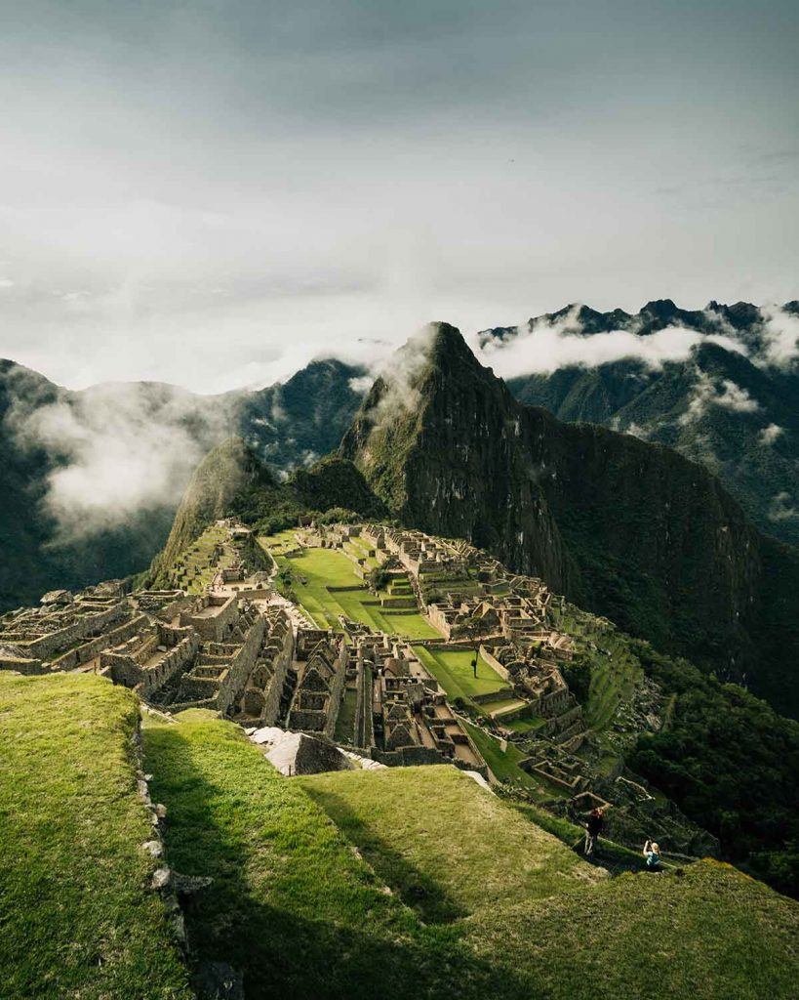
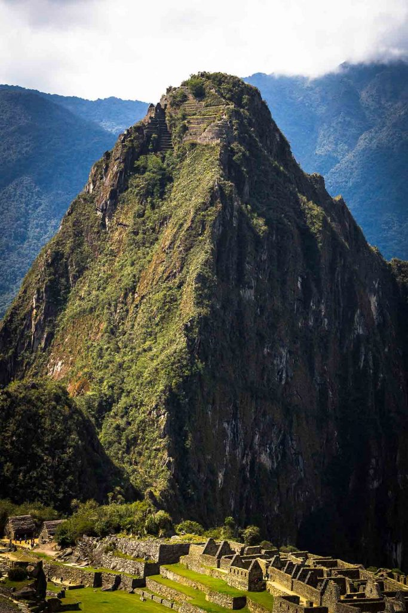

Machu Picchu, Peru


Geographical Location: South America
Machu Picchu is an ancient Incan citadel located in the Andes Mountains of Peru, South America. It is renowned for its breathtaking beauty, architectural ingenuity, and historical significance. Believed to have been built in the 15th century during the height of the Inca Empire, Machu Picchu served as a royal estate or religious retreat for the Incan ruler Pachacuti.
Machu Picchu's remote location and mysterious abandonment in the decades following its construction have contributed to its status as a UNESCO World Heritage Site and one of the New Seven Wonders of the World. The site is characterized by its well-preserved stone structures, including temples, plazas, residential buildings, and intricate terraces carved into the mountainside. The precise construction methods used to build Machu Picchu without the use of mortar have puzzled archaeologists for decades. The entire complex is surrounded by stunning panoramic views of the surrounding valleys and mountains.
Photo Gallery

A view of Machu Picchu with flowers and greenery in the foreground. Huayna Picchu is visible in the background.
A dark and moody view of the Machu Picchu ruins on a cloudy day. The Inca terraces are covered in bright green grass and the Huayna Picchu Mountain looms in the background.

A llama walks around the ruins in a fenced off area. The llama is dark and light colored. The view of Machu Picchu is cloudy but visible.

A wide shot of the stone architecture and Inca walls leading up to the Guardhouse. The fog is sitting in the ruins.
A view of the famous Huayna Picchu Mountain and the ruins atop it. The main ruins of Machu Picchu are also visible in the lower half of the photo.